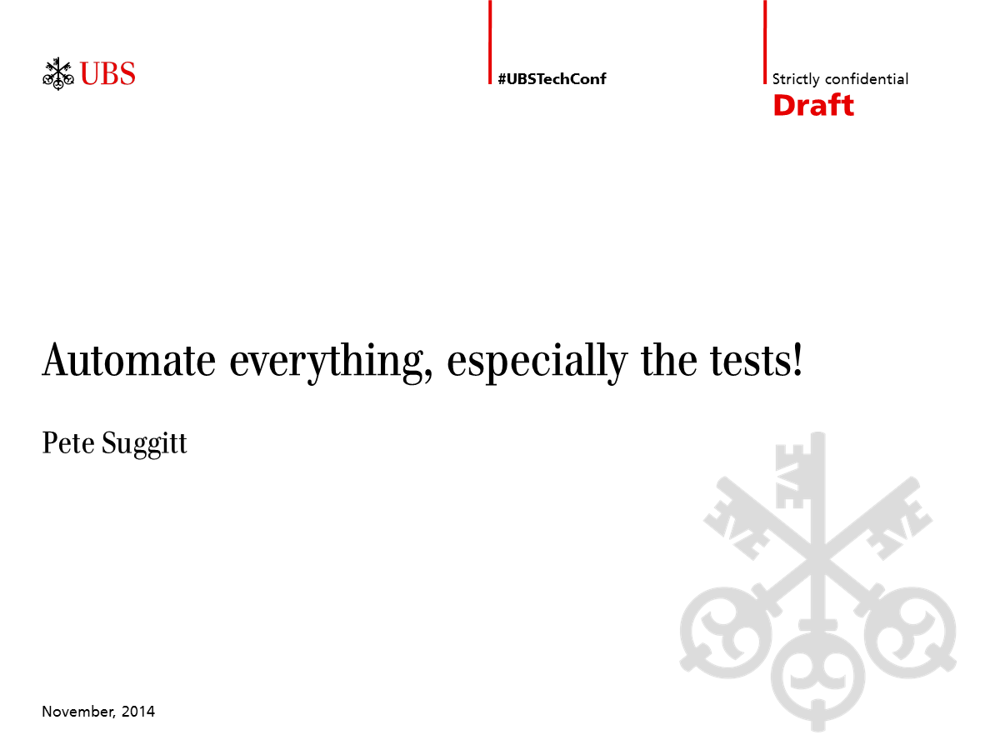

The sausage factory
We are a sausage factory
We make specialist sausages
...in all shapes and sizes
The sheer amount of sausages we make, gives us competitive advantage
Each and every sausage gives us some kind of value
... but, there is a problem
Our customers want better sausages
... cheaper
... more quickly
... and with higher quality
They don't ask for much !!!
The Value Chain
Test Automation
Pets and Cattle
Continuous Delivery
My advice to you